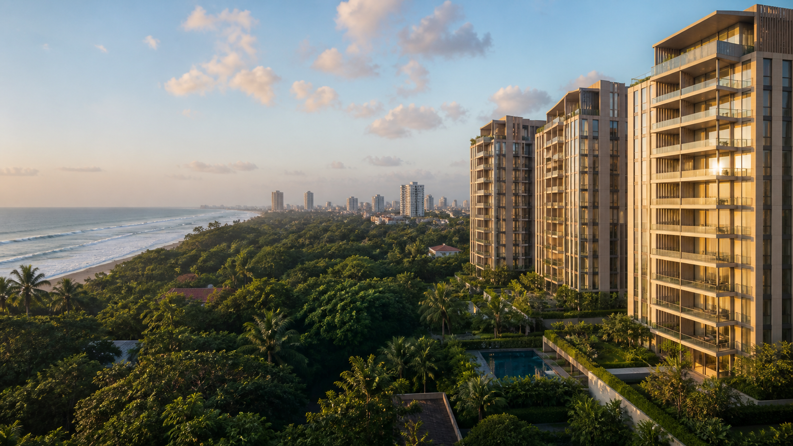
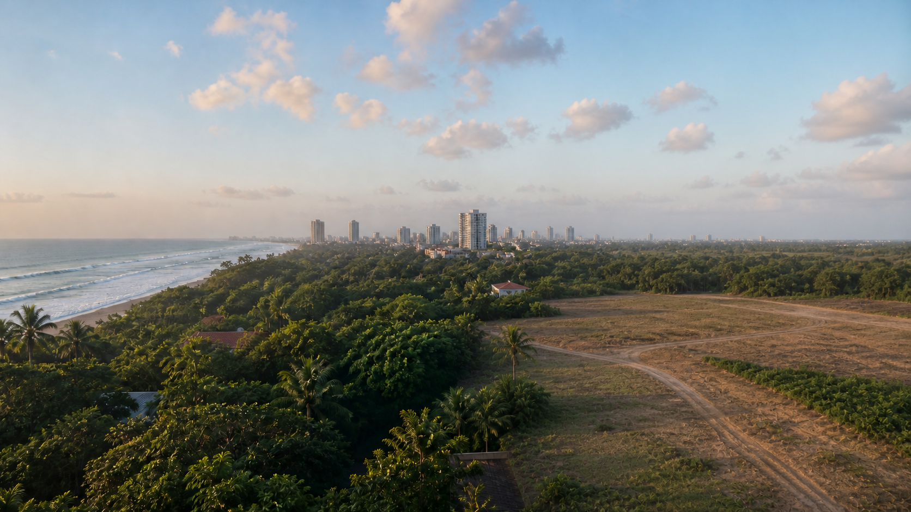

Airport connection
Practical access toward Bandaranaike International Airport supports diaspora owners, frequent travellers and corporate tenants.
Contemporary residences positioned for buyers who want greener surroundings without losing access to Colombo, Bandaranaike International Airport, Negombo and the western coastal corridor.

Drag the control across the site to reveal how the development transforms the land into a landscaped residential destination. The finished image is an illustrative concept and should be replaced by approved project renders when available.

Before · LandAfter · VisionThe investment story is not simply distance from Colombo. It is everyday connectivity: international travel, employment centres, schools, hospitals, shopping and the coast—within a less compressed residential setting.
Practical access toward Bandaranaike International Airport supports diaspora owners, frequent travellers and corporate tenants.
Ja-Ela participates in the wider capital-region economy while offering a softer residential rhythm than the dense city core.
Northbound access opens coastal dining, leisure and hospitality destinations around Negombo and the western shoreline.
Schools, healthcare, retail and transport connections strengthen both owner-occupier appeal and long-term rental logic.
An illustrative buyer-orientation map showing the project’s relationship to the airport, Colombo, Negombo and national destinations. Official geodata should be used in final legal sales material.
OpenGate packages the location story, project proposition and lead journey for international buyers, investors and diaspora audiences.